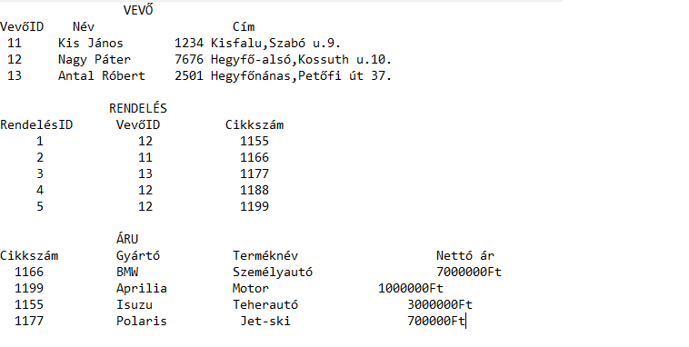
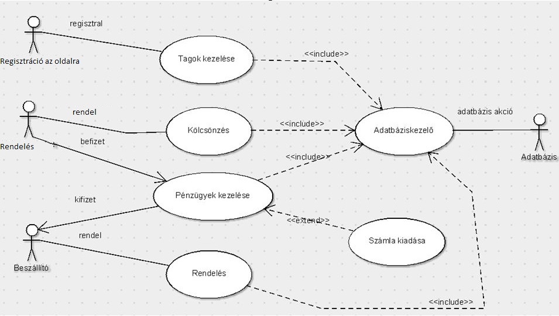

Tartalom
- Áttekintés
- Jelenlegi helyzet
- Vágyálomrendszer
- Jelenlegi folyamatok modellje
- Igényelt folyamatok modellje
- Követelmény lista
- Képernyőtervek
- Adatmodell
- Használati esetek
- Forgatókönyv
- Fogalomszótár
1. Áttekintés
Cél egy olyan rendszer / weboldal fejlesztése, ahol bárki, bárhonnan, gyorsan és egyszerűen tudjon olyan járművet
választani amely megfelel neki.
A felhasználó könnyedén és szabadun lesz képes választani használtjárművekből minden kategóriában.
A járműveket külön menüpontokba soroljuk és onnan is lehet majd tovább választani, márkák, méretek, üzemanyag, és egyéb más
igyén szerint.
Egy menüpontba belépve a felhasználó saját maga válogathat a jármű felhozatalból, itt láthatja majd az árakat,
mikor lett elérhető, ki hírdetet, elérhetőségeket, esetleges hibákat / javításokat stb.
Ilyen weboldalak / rendszerek már léteznek, ezért nem az a cél, hogy egy technológiai újjítást teremtsünk, hanem
hogy egy hasonló szolgáltatást tudjunk nyújtani ellenfeleinkkel szemben, amelyek jobbak, gyorsabbak, kényelmesebbek.
Ez a rendszer / weboldal ingyenes lesz, ezért bárki könnyedén hozzátud majd férni egy számítógépen, de akár a telefonján is.
Ha egy felhasználó hírdetni szeretni a weboldalunkkon akkor, regisztrálnia kell, amely kér egy Felhasználónevet, Jelszót,
E-mail címet, Várost, és egy elérhetőséget.
2. Jelenlegi helyzet
Az ügyfél olyan igénnyel kereset meg bennünket, hogy hozzunk létre egy olyan Használt jármű online weboldal-t, amely
versenytársai-val szemben, könnyebben, gyorsabban és hasznosabban lehessen használni.
A weboldal / rendszer olyanoknak nyújt segítséget, akik használt járműveket szeretnének gondmentesen,
és időpazarlás nélkül vásárolni.
Vagy azoknak akik használt gépjárművüktől szeretnének megválni, egy olyan rendszerben, ahol könnyedén,
és díjmentesen meghírdethetik azt.
A XXI. században már létezik sok ilyen fajta oldal az Interneten, még Magyarországon is.
De az ügyfél számára ezek az oldalak túl nehezen használhatónak, zsúfoltnak, és lassúnak bizonyultak.
A kereset járműveket nehezen érte el, ha el is érte akkor nem olyanokat amelyet ő szeretet volna látni.
Az információk a jármvűvel kapcsolatban nem voltak tiszták, és nem votl elérhető a tulajdonos.
Ezért, kért fel az ügyfél arra, hogy egy olyan weboldalt készitsünk amely tiszteli a felhasználó idejét, és
nem vesztegti azt feleslegesen.
Az ügyfél igénye szerint az oldal tartalmazni fog egy regisztrációs felülelet, ahol a felhasználónak
regisztrálnia kell, hogy meghírdethesse járművét.
Az ügyfél erre azt az okot adta meg, hogy ha a jármű tulajdonosa több módon is megadja elérhetőségét,
akkor könnyebben lesz elérhető.
3. Vágyálomrendszer
A cél egy olyan Online webes árúház, ahol könnyen elérhető minden. Ha lesz lá lehetőség akkor a rendszer elérhető lesz több platformon, weben és C#-ban. Jelenleg csak a C# lesz elérhető. Kell lenni-e egy regisztrációs felületnek, ahol a vendégek feltudnak regisztrálni, így az oldalt a saját tetszésüknek szabhatják, az adataikat megjegyzük és így gyorsabban és könnyedébben tudnak vásárolni. Persze belehet lépni vendégként is. Az elektronikai cikkek menüpontokban lesznek elérhetőek, pl. "Személyautók", "Motorok", stb.
4. Jelenlegi folyamatok modellje
A rengetek webes áruházakból nehezen tudunk választani, hogy melyik a legjobb, melyiket a legkönnyebb használni, és hogy melyik raktára a legbővebb. A mai világban az emberek figyelem ideje egyre kissebb és kissebb, például hamár egy videó nem töltődik be pár másodperc alatt akkor nagy az esélye, hogy megse nézzük. A felhasználóknak egy gyors, akadály mentes, elérhető, és nem bonyolult eszközök kellenek, szinte az élet minden szempontjához, és ez igaz a Webshopokra is. Miértelme használni egy webes árúházat, ha nem találod meg amit találsz, azon az áron amelyre számítottátl, egy teljesen másik színben.
5. Igényelt folyamatok modellje
A felhasználó egy kezdő felületen kezd, ahol van lehetősége regisztrálni, vagy bejelentkezni ha már regisztrált, valamint képes vendégként is használni az oldalt. Belépve láthatóak a főbb menüpontok: Telefonok, Laptopok, Tabletek, Okosórák, stb. Ezekbe belépve találhatók különböző termékeke, valamint a menüpontokon belül is képesek vagyunk szűrni, ár, gyártó, konfiguráció, gépigény, stb. szerint. A kiválasztott termékünket beletehetjük egy "Kosár"-ba vagy összehasonlíthatjuk más termékekkel. Ha megvan a kosarunkban a termék akkor lehetővé válik egy "Vásárlás" menüpont, ahol megvehetjük kiválasztott termékünknet/termékeinket. Itt választhatunk még más opciókból pl. Milyen kiszállítás, Időpont választása, stb.
6. Követelmény lista
| Modul | ID | Név | Verzió | Kifejtés |
|---|---|---|---|---|
| Adminisztráció | K1 | Kezdőoldal | 1.0 |
Az oldal amelyet lát a felhasználó amikor megnyitja a programot. Itt érhető el külöböző lehetőségek, mint a Vendég, Regiszráció és Bejeletkezés. |
| Adminisztráció | K2 | Regisztráció | 1.0 |
Itt képes a felhasználó felregisztrálni az oldalra. Szükséges a felhasználó Neve, Jelszava, E-Mail. |
| Adminisztráció | K3 | Bejeletkezés | 1.0 |
Itt képes a felhasználó bejelentkezni az oldalra. Szükséges a felhasználó Neve és jelszava. |
| Felület | K4 | Főoldal | 1.0 | Ezzen a felületen érhető el minden másik menüpont a felhasználó számára. |
| Felület | K5 | Személyautók | 1.0 |
Az a felület ahol a különböző Személyautók elérhetőek. Ezen belül itt lehet különböző szempontok alapján szürni. |
| Felület | K6 | Motorok | 1.0 |
Az a felület ahol a különböző Motorok elérhetőek. Ezen belül itt lehet különböző szempontok alapján szürni. |
| Felület | K7 | Kisteherautók | 1.0 |
Az a felület ahol a különböző Kisteherautók lesznek elérhetőek. Ezen belül itt lehet különböző szempontok alapján szürni. |
| Felület | K8 | Egyéb | 1.0 |
Az a felület ahol a különböző Egyéb járművek elérhetőek. Ezen belül itt lehet különböző szempontok alapján szürni. |
| Felület | K9 | Kezdőoldal | 1.0 |
Az oldal amelyet lát a felhasználó amikor megnyitja a programot. Itt érhető el külöböző lehetőségek, mint a Vendég, Regiszráció és Bejeletkezés. |
| Felület | K10 | Összehasonlítás | 1.0 |
Egy külön menüpont amelyet a főoldalról érünk el. A felhasználó által kiválasztott termékeket itt képes összehasonlítani. |
| Felület | K11 | Vásárlás | 1.0 |
Ha megvan a kiválasztott térmék akkor a kocsi adatainál lesz az adott eladó elérhetőségie ami segítségével lehet pontosítani a vásárlás idöpontját. |
7. Képernyőtervek
1. Regisztációs felület: Nem kötelető, csak ha a felhasználó értesítest szeretne kapni a különféle akciok és extra ajánlatokról, akkor lehet opcionális ez a rész.2. Főoldal: Ez a kezdő oldal, innen a felhasználó tud választani a lehetőségek közül, hogy hová akar eljutni. Négy főbb kategóra közül lehet választani.
3. Személyautók: Ez az első kategória,itt szemékyautók közül tud választani a felhasználó, különböző szűrőrőket tud beállítani, ami megkönnyítini a dolgát.
4. Motorok: Ez az második kategória, itt többféle motorok közül tud választani a felhasználó és itt is tud beállítani különböző szűrőrőket, ami megkönnyítini a dolgát.
5. Teherautók: Ez az harmadik kategória, itt teherautók közül tud választani a felhasználó és itt is tud beállítani különböző szűrőrőket, ami megkönnyítini a dolgát.
6. Egyéb: Ez az negyedik kategória, itt több féle katagóriáju járműveket is megtalákható ezek közűl tud választani a felhasználó és itt is tud beállítani különböző szűrőrőket, ami megkönnyítini a dolgát.
8. Adatmodell

9. Használati esetek

10. Forgatókönyv
1. A felhasználó be lép az oldalra.2. A regisztrációs ablak feldobása (Persze nem kötelető csak ha a felhasználó értesítest szeretne kapni a különféle akciok és extra ajánlatokról)
3. Abban az esetben ha a Felhasználó regisztrálni szeretne akkor meg kell adni pár személyes adatott és esetlegesen a szállítási adatokat amit majd kesőbb nem kell meg adnia mert a felhasználó regsztrációs résznél már meg adta.
4. Miután felhasználó tulvan az első lépéseken a kerésés fülnél meg adhatja hogy milyen tipusu terméket szeretne vásárolni/utána nézni.
5. Majd ha keresett terméket meg találta de meg ezen felül is szűkíteni szeretné a találatokat akkor a különféle szűrőket tud be állítani ami meg könnyítini a felhasznaló dolgát.
6. További folyamat az eladóval való kapcsolat felvétel majd az ár megeggyezése.
7. Köszönjük hogy minket választott!
11. Fogalomszótár
[Adminisztráció]: Olyan felület ahol a felhasználó valamilyen adatát megkell hogy adja.
[Felület]: Olyan oldal, amellyel a felhasználó képes interaktiválni és megváltoztatni.
[HTML, CSS, JAVASCRIPT, SQL]: Programozási nyelvek, amelyben képesek vagyunk elkészíteni a programot.
[Modul]: Ez alapján különböztetjük meg, hogy milyen fajtáú egy követelmény.
[ID]: Az adott követelményhez tartozó azonosító, amivel könnyen megtalákható.
[BUG]: Fejlesztési hiba ami által a program nem a várt eredményt ad vissza.
[Backend]: A kiszolgáló, ahonnan az alkalmazást el lehet érni.
[Frontend]: Egy réteg ami feladata a rendszerből kijutó adatok prezentálása, illetve a bejövő adatok fogadása.
[Web-service]: Különböző programnyelveken írt és különböző platformokon futó szoftveralkalmazások
interneten keresztül történő adatcseréjére használt webszolgáltatások.
[Multiplatform]: Több környezetben futtatható alkalmazás.